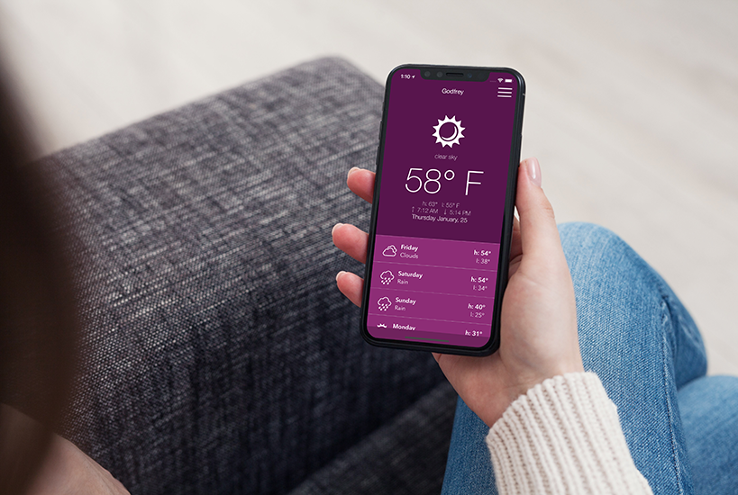

RAINY-SHINY-CLOUDY
Preview in iTunes Store
RAINY-SHINY-CLOUDY
IOS 11 MOBILE APP
ios development
CLIENT: SelfPreview in iTunes Store
Sole designer and developer. This free weather app provides 2 sets of data based on the user's location. Displayed is the current, minimum and maximum temperature, condition along with a 7-day forecast.
Presently, the data is displayed for the current location and utilizing Fahrenheit.
UPDATE: Ability to display weather for other locations.
Xcode 9, Swift 4.0, iOS 11, CocoaPods (Alamofire, SwiftyJSON), JSON, Photoshop, GitHub